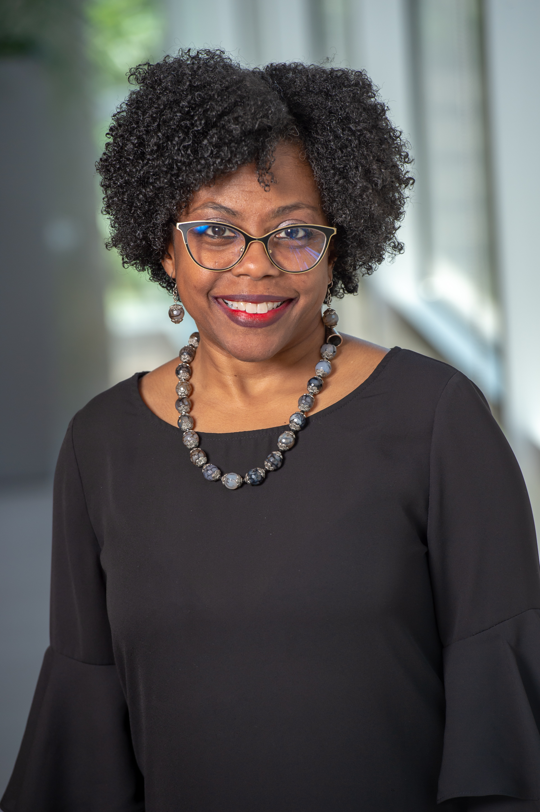

About Me

My name is Lori Ross and I am originally from the 8tth cloudiest state in the US according to the 2015 Farmers Almanac. Being from Ohio I truly love the Dallas climate. I am not yet married with no children. I am the ever-faithful human servant to a cat named Brindle and I live in the city of Grand Prairie. I enjoy, beading, reading, going to the movies and going out to eat with friends. I hope to eventually add coding to the list of things I like to do.
I attended Eastern Michigan University where I completed a Bachelor’s in Medical Science. During my intern I determined I did not want to work with flesh eating bacteria so began my real journey of finding a career. My first real job was as a customer service representative for a natural gas company in Ohio. I feel as if this is where I learned to be more assertive. Once I determined it was granny being cold or me not having a job being firm about clients paying their bills or suffering the consequences of their own action became very simple. I returned to school at this point and pursued a certificate in accounting to obtain eligibility for taking the CPA. I got the eligibility but still don’t have a CPA and that is a long story for another time. My next job after the Gas Company was a job in receivables which I loved and have made a career up until this point. I have since obtained two additional degrees one being an MBA and the other an MSA only to come to this point in life where I am ready to pivot and make a life change